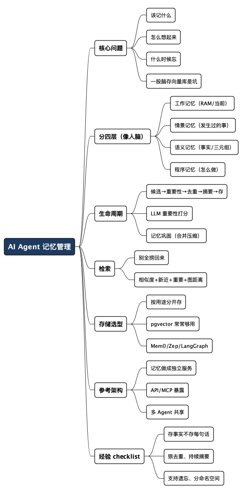

如何管理 AI Agent 的记忆之一：既记得牢、想得起，又不烧钱
Posted on 五 07 8月 2026 in AI
| Abstract | 如何管理 AI Agent 的记忆之一：既记得牢、想得起，又不烧钱 |
|---|---|
| Authors | Walter Fan |
| Category | learning note |
| Version | v1.0 |
| Updated | 2026-08-07 |
| License | CC-BY-NC-ND 4.0 |
我带过一个实习生，人很聪明，脑子转得也快，就一个毛病：转头就忘。今天跟他讲清楚的事，明天他又来问你一遍；你上周说过“这个客户偏好 Go，不要给他推 Java”，他下次照样甩过去一份 Spring Boot 方案。你不能说他不聪明，只能说他“记不住、也想不起来”。
现在很多 AI Agent，就是这个实习生。
大家总以为 Agent 做得烂是因为大模型不行。其实真到生产环境，绝大多数 Agent 翻车不是输在模型，而是输在记忆管理。要么什么都往数据库里塞，聊到第三天上下文塞不下、Token 账单吓死人；要么根本没做长期记忆，用户说了三遍的偏好它一次都记不住。看完这篇你能带走一件事：Agent 的记忆不该是"把聊天记录扔进向量库"这么简单，它更该像人脑一样分层管理——记得牢、想得起、还不烧钱，这三件事是可以同时做到的。
- 不是"存得越多越聪明"，恰恰相反：存得越多，检索越慢、越贵、越容易翻出一堆无关的旧账。
- 好的记忆系统解决的是三个问题:该记什么、怎么想起来、什么时候忘掉。
为什么"一股脑存向量库"是个坑
咱们先说清楚最常见的做法：把每一轮对话都算个 embedding，扔进 Qdrant 或者 pgvector，用户来问就做一次相似度检索，捞回来拼进 prompt。
这套东西 demo 阶段特别香，上线之后就开始还债：
- 存储只涨不跌。用户说的 "hello" "谢谢" "好的" 全都进了库，一个月下来九成是垃圾。
- 检索质量下降。库里噪音越多，相似度 top-k 里混进来的无关内容越多，模型被带偏。
- Token 越烧越多。捞回来的东西一股脑塞进上下文，输入 Token 蹭蹭涨，钱包蹭蹭瘪。
问题的根子在于：向量相似度只是"长得像"，不等于"该记"也不等于"现在有用"。 人脑不是这么干的。你不会把今天说的每句话原封不动背下来，你会区分"这是我现在正在想的""这是昨天发生的事""这是我知道的一个事实""这是我会做的一件事"——然后大部分细节，睡一觉就忘了，只留下提炼过的结论。
Agent 的记忆系统，也该照这个思路搭。
像人脑一样分四层
一个生产级的 Agent，记忆通常分成四层，各管各的事：
| 记忆类型 | 对应人脑 | 存什么 | 大白话 |
|---|---|---|---|
| 工作记忆 Working | 你此刻在想的 | 当前对话、工具输出、当前计划 | "我正在干的这件事" |
| 情景记忆 Episodic | 过去发生的事 | 一次次任务的经过和结果 | "昨天我们做了啥" |
| 语义记忆 Semantic | 学到的事实 | 用户偏好、项目配置等长期事实 | "我知道的一条条事实" |
| 程序记忆 Procedural | 会做的事 | 工作流、操作步骤 | "这件事该怎么做" |
很多开源框架只做了其中一层（通常是把对话塞向量库那层），就号称"有记忆"了。这就好比只有短期记忆的人——聊天挺顺，一转身全忘。
它们怎么协作，看这张图：
flowchart TD
A[用户请求] --> B[工作记忆<br/>当前上下文]
B -->|检索相关的长期记忆| C[长期记忆]
subgraph C [长期记忆]
direction LR
C1[情景记忆<br/>发生过的事]
C2[语义记忆<br/>学到的事实]
C3[程序记忆<br/>怎么做]
end
C -->|回答之后再更新记忆| D[记忆巩固<br/>合并 / 压缩]
D -.回流.-> C
下面一层层拆。
1. 工作记忆：相当于内存条
工作记忆就是 RAM，装的是"我此刻在想的东西"：当前对话、刚刚的工具输出、当前任务、当前计划、草稿本。
目标:
做一个 REST API
当前步骤:
先写 OpenAPI
已知约束:
Java 21
Spring Boot
待定问题:
要不要上 OAuth?
这层通常活在 LangGraph 的 state、AutoGen 的 AgentState、CrewAI 的 Context 里，用完就丢，不做永久持久化。就像你算一道题时草稿纸上的演算，算完撕了就撕了。
2. 情景记忆：昨天发生了什么
情景记忆存的是"经历"——一次任务从头到尾的经过。
昨天
用户要:
- OAuth
- Spring Security
- JWT
结果:
API 顺利完成。
等第二天用户说"接着昨天的做"，Agent 就得能把这段经历捞回来。常见的存储结构长这样：
{
"task": "...",
"timestamp": "...",
"outcome": "success",
"summary": "...",
"embeddings": [ ... ]
}
一般按向量、时间戳、标签三种维度建索引——因为你要么按"内容像不像"找，要么按"什么时候"找，要么按"打了啥标签"找。
3. 语义记忆：我知道的事实
语义记忆和情景记忆最大的区别：情景是"事件导向"（某时某刻发生了啥），语义是"事实导向"（一条条稳定的事实）。
用户偏好 Go。
用户在 X 公司。
项目跑在 Kubernetes 上。
数据库是 MySQL。
这些事实用"主-谓-宾"三元组存最合适：
主语 谓语 宾语
用户 偏好 Go
项目 部署在 Kubernetes
一到"关系"就该想到图数据库。比如 Neo4j 里：
(用户)-[:偏好]->(Go)
(项目)-[:部署于]->(Kubernetes)
好处是：以后你问"这个用户相关的项目都用什么技术栈"，顺着边一走就出来了，比向量检索精确得多。
4. 程序记忆：这件事该怎么做
程序记忆存的不是"发生了什么"，而是"怎么做一件事"——工作流、SOP。
部署服务
1. 构建 Docker 镜像
2. 推送镜像
3. 更新 Helm
4. 等待 rollout 完成
这类东西存成 Markdown、JSON workflow、YAML，或者直接编成 LangGraph 的图都行。它的价值在于让 Agent 别每次都"重新发明轮子"——标准流程记下来，下次照着走。
记忆的生命周期：别急着写
这是最容易被忽略、却最影响成本的一环。记忆不该聊完立刻写库。 一个健康的写入流程是这样的：
对话
↓
候选记忆（先当"待定"，不落库）
↓
重要性评估（值不值得永久记？）
↓
去重（是不是已经有了？）
↓
摘要（压成一句能复用的话）
↓
存储
这一套下来，就能拦住那些没营养的东西：
hello
谢谢
好的
这些根本不该进长期记忆。
用 LLM 给记忆打个重要性分
一个业界常用的招：让模型自己给这段内容打个重要性分。
给下面这段对话打个 1-10 分。
这段内容值得被永久记住吗？
对话:
...
然后只存 score > 7 的。阈值可以按业务调——你想记得多，就调低；想省钱，就调高。这个"用 LLM 评估要不要记"的思路，微软、Anthropic、OpenAI 在各自的研究或工程实践里都提过类似的变体（具体做法各家不同，这里只取其神）。
记忆巩固：像睡觉一样整理
人脑在睡觉时会做"记忆巩固"，把白天零碎的经历整理、压缩、归档。Agent 也该有这么个后台过程。
别把这三条分开存：
昨天：问了 Kubernetes。
今天：问了 K8S。
明天：问了 Pod。
后台巩固时，把它们合并成一条：
用户正在搞 Kubernetes 基础设施。
存储的增长立刻就被摁住了——三条噪音变一条信号，检索时也更容易命中。这一步一般放到低峰期的定时任务里跑，配合摘要和去重一起做。
检索：永远别把全部捞回来
写入省了，检索这头也不能松。最忌讳的就是"把相关记忆全捞回来塞进上下文"——那是 Token 账单的头号杀手。
好的检索是多信号打分，不是只看向量相似度。一个常见的加权公式：
score = 0.45 * 向量相似度
+ 0.25 * 新近度
+ 0.20 * 重要性
+ 0.10 * 图关系距离
- 向量相似度：内容像不像。
- 新近度：越新的记忆越可能有用（用户上周改了架构，就别再翻两个月前的老配置）。
- 重要性：写入时打的那个分，重要的优先。
- 图关系距离：在知识图谱里离当前话题几跳，越近越相关。
这四个信号一起排序，再取 top-k，捞回来的东西又准又少，Token 自然就省了。权重不是圣旨，得拿真实 case 调——不同业务对"新"和"准"的偏好不一样。
什么记忆放什么存储
没有一个数据库能通吃所有记忆类型。按用途选存储，才不至于用向量库干图数据库的活：
| 记忆 | 合适的存储 |
|---|---|
| 工作记忆 | LangGraph State / Redis |
| 对话记录 | PostgreSQL / SQLite |
| 语义记忆 | PostgreSQL + pgvector / Neo4j |
| 情景记忆 | 向量库 |
| 文档 | 向量库 |
| 知识（强关系） | 图数据库 |
| 工作流 | YAML / Markdown |
向量库这块，Qdrant、Milvus、Weaviate、Chroma 都行；很多企业场景，PostgreSQL + pgvector 就够用了——别一上来就上一堆重组件，先看数据量。
顺手提一句常用的现成轮子（各有侧重，别指望一个搞定一切）：LangGraph（长跑 Agent 的状态与 checkpoint）、Mem0（专门做长期记忆，自带抽取、打分、去重）、Zep（专攻对话记忆，带时间检索和知识图谱）、LlamaIndex（文档记忆与检索）、Graphiti（从交互里动态构建知识图谱）。选型时先问自己"我缺的是哪一层"，再对号入座。
一套可落地的参考架构
如果让我来搭，我不会把记忆逻辑硬塞进每个 Agent 里——那样每个 Agent 各记各的，一致性、审计、权限全乱套。我更倾向于把记忆做成一个独立的服务，前面用 API 或者 MCP 暴露出来：
flowchart TD
Agent["AI Agent (LangGraph)"] --> API["记忆 API / MCP Server"]
API --> Redis["工作缓存<br/>Redis"]
API --> PG["语义存储<br/>PostgreSQL + pgvector"]
API --> Qdrant["情景存储<br/>Qdrant"]
Redis --> KG["知识图谱<br/>Neo4j / Graphiti"]
PG --> KG
Qdrant --> KG
API -.触发.-> Consolidate["后台记忆巩固<br/>摘要 / 去重 / 衰减"]
Consolidate -.整理后写回.-> PG
这么搭有几个实实在在的好处：
- 多个 Agent 共享同一套记忆，不会你记你的、我记我的。
- 检索可扩展，各存储组件能独立演进——换向量库不影响 Agent 逻辑。
- 企业场景友好：权限控制、审计、记忆生命周期策略，都能在这一层统一收口。
落地时不必一开始就把四层记忆和所有数据库都配齐。可以先选十几条不敏感的样本，分别测试“能否写入、能否按原话找回、事实更新后旧版本是否被正确标记、用户要求忘记时能否删除”。等这条最小链路稳定，再决定是否需要图数据库、后台巩固任务和更复杂的排序。
建议把成本和质量一起记录：每次写入消耗多少 Token，检索返回多少候选，最终真正被模型采用了多少条，错误记忆和过期记忆各有多少。记忆系统不是存得越多越好，而是要让每一条被留下的内容都能解释“为什么留下、什么时候失效、如何删除”。
上代码：一个能跑的最小记忆库
道理讲一堆，不如给一段能跑的代码。下面用 PostgreSQL + pgvector 实现前面说的核心逻辑：候选记忆 → 重要性打分 → 去重 → 存储 → 多信号检索。为了聚焦，我把工作记忆（Redis）和图数据库那两层略掉了，先把最吃成本的语义/情景记忆这条主线跑通。
依赖：
pip install psycopg2-binary openai numpy，外加一个装了 pgvector 的 PostgreSQL（docker run -e POSTGRES_PASSWORD=pass -p 5432:5432 pgvector/pgvector:pg16）。
建表：一条记忆该带哪些字段
记忆不是只存 embedding，而是要带够检索和治理需要的元数据——这是"记得起来"和"敢忘"的前提：
CREATE EXTENSION IF NOT EXISTS vector;
CREATE TABLE memories (
id BIGSERIAL PRIMARY KEY,
user_id TEXT NOT NULL, -- 用户隔离：命名空间
kind TEXT NOT NULL, -- semantic / episodic
content TEXT NOT NULL, -- 提炼后的记忆，不是原始对话
importance REAL NOT NULL, -- 1-10 重要性分
source TEXT, -- provenance：这条哪来的
created_at TIMESTAMPTZ DEFAULT now(),
embedding vector(1536)
);
-- 向量索引 + 用户维度过滤，检索又快又不串味
CREATE INDEX ON memories USING hnsw (embedding vector_cosine_ops);
CREATE INDEX ON memories (user_id, kind);
写入：先打分、再去重、才落库
关键就在于别聊完立刻写。下面这段 remember() 把生命周期串起来了：
import numpy as np, psycopg2, json
from openai import OpenAI
client = OpenAI() # 或任意 OpenAI 兼容网关
db = psycopg2.connect("dbname=postgres user=postgres password=pass host=localhost")
def embed(text: str) -> list[float]:
return client.embeddings.create(
model="text-embedding-3-small", input=text
).data[0].embedding
def score_importance(text: str) -> float:
"""让 LLM 给这条内容打 1-10 分，只有值得长期记的才存"""
prompt = (
"给下面这段内容打 1-10 分，评估它是否值得被 AI 助手永久记住。"
"用户的长期偏好、项目关键事实给高分；寒暄、临时性内容给低分。"
f"只回一个数字。\n\n内容：{text}"
)
resp = client.chat.completions.create(
model="gpt-4o-mini",
messages=[{"role": "user", "content": prompt}],
)
try:
return float(resp.choices[0].message.content.strip())
except ValueError:
return 5.0
def remember(user_id: str, text: str, kind="semantic",
source="chat", threshold=7.0, dedup_sim=0.92):
# 1) 重要性闸门：不够重要直接丢
imp = score_importance(text)
if imp < threshold:
print(f"[skip] importance={imp:.1f} < {threshold}: {text[:30]}")
return
vec = embed(text)
# 2) 去重：和已有记忆太像就不新增（真正生产里应改成"合并/更新"）
with db.cursor() as cur:
cur.execute(
"""SELECT id, content, 1 - (embedding <=> %s::vector) AS sim
FROM memories WHERE user_id=%s
ORDER BY embedding <=> %s::vector LIMIT 1""",
(vec, user_id, vec),
)
row = cur.fetchone()
if row and row[2] >= dedup_sim:
print(f"[dedup] 命中已有记忆(sim={row[2]:.2f}): {row[1][:30]}")
return
# 3) 落库
cur.execute(
"""INSERT INTO memories(user_id, kind, content, importance, source, embedding)
VALUES (%s,%s,%s,%s,%s,%s)""",
(user_id, kind, text, imp, source, vec),
)
db.commit()
print(f"[store] importance={imp:.1f}: {text[:30]}")
检索：多信号加权，只取 top-k
检索这头，别只按向量相似度排。把新近度和重要性也揉进去——这就是前面那个加权公式落到 SQL 里的样子：
def recall(user_id: str, query: str, k=3,
w_sim=0.6, w_recency=0.25, w_imp=0.15):
qvec = embed(query)
with db.cursor() as cur:
cur.execute(
"""
SELECT content, importance,
1 - (embedding <=> %s::vector) AS sim,
-- 新近度：越新越接近 1，30 天前衰减到 ~0.37
exp(-EXTRACT(EPOCH FROM (now()-created_at))/2592000.0) AS recency
FROM memories WHERE user_id=%s
ORDER BY embedding <=> %s::vector LIMIT 20
""",
(qvec, user_id, qvec),
)
rows = cur.fetchall()
scored = [
(w_sim*sim + w_recency*rec + w_imp*(imp/10.0), content)
for content, imp, sim, rec in rows
]
scored.sort(reverse=True)
return [c for _, c in scored[:k]] # 只回 top-k，省 Token
用起来就三行：
remember("u1", "用户偏好 Go，明确不要 Java 方案", source="preference")
remember("u1", "谢谢，辛苦了") # 会被 importance 闸门拦掉
remember("u1", "用户喜欢用 Go 语言") # 会被 dedup 拦掉（和第一条太像）
print(recall("u1", "给他推荐个后端技术栈"))
# → ['用户偏好 Go，明确不要 Java 方案']
看到没：三次写入，只有一条真正进库，检索时也只回一条最相关的。寒暄被闸门拦了，重复被去重拦了，检索只取 top-k——存储和 Token 就是这么省下来的。这段一百来行，就是前面所有道理的可执行版本。
走一遍真实场景：用户说"接着昨天的做"
光有零件不够，看它们怎么配合。假设一个写代码的 Agent，还原一个最常见的场景：
第一天，用户让 Agent 搭一套带 OAuth 的 REST API。这一天里：
- 工作记忆（Redis）实时装着当前对话、刚才的工具输出、当前计划。任务一结束，这块就清空——它是 RAM，不是硬盘。
- 收尾时触发一次写入流程：把这一天压成一条情景记忆存进库：
json { "kind": "episodic", "content": "帮用户完成了带 OAuth2 + JWT 的 Spring Boot REST API，用户 Java 21，已上线", "importance": 8.5, "source": "task-completion" } - 同时抽出两条语义记忆（事实）：
用户用 Java 21、用户项目用 Spring Security。寒暄那些，importance 打分没过 7 分，直接丢掉。
第二天，用户只甩一句："接着昨天的做，加上刷新 token。"
Agent 内部这么转：
- 工作记忆是空的——昨天的 RAM 早清了，它此刻啥都不知道。
- 拿"昨天""刷新 token"去
recall()，多信号加权命中：那条 importance 8.5、created_at 就在昨天（recency 接近 1）的情景记忆排到第一，两条语义事实跟上。 - 把这三条（而不是昨天几百轮对话原文）拼进上下文——输入 Token 从"几千"降到"几十"。
- Agent 于是"想起来了"：哦，Spring Boot + OAuth2 那套，Java 21,继续加 refresh token。
这就是"记得起来又不烧钱"的完整闭环：该记的压成一条存下、该忘的当场丢掉、要用时精准捞几条。 如果你当初把昨天几百轮对话原样塞进向量库，第二天检索捞回来一大坨,Token 爆炸不说,模型还容易被无关内容带偏。
更进一步：把它做成 AI Skill + AI Tools，让 Claude Code / Codex / OpenCode 都能用
上面这套 remember() / recall() 现在还只是"我自己脚本里的函数"。可如果你像我一样，同时在用 Claude Code、Codex、OpenCode 写代码，就会冒出一个很自然的想法：
能不能把这套记忆系统抽出来，做成一个所有编码 Agent 都能调用的公共能力？
答案是能，而且这正是 AI Tools（MCP） 和 AI Skill 该干的活。区别在于：
- AI Tools（MCP Server）：把
remember/recall暴露成标准工具，让 Agent 能存能取——这是"手"。 - AI Skill：一份写给 Agent 看的说明书，告诉它什么时候该存、什么时候该取、怎么用这两个工具——这是"脑子里的规矩"。
光有工具没 Skill，Agent 有手不会用；光有 Skill 没工具，Agent 有想法没抓手。两个得配套。
第一步：用 MCP 把记忆包成 AI Tools
MCP（Model Context Protocol）是现在 Claude Code、Codex、OpenCode 都支持的工具协议。用 Python SDK 把上面两个函数包一层就行，核心逻辑一行没改：
# memory_mcp_server.py
from mcp.server.fastmcp import FastMCP
from memory_store import remember, recall # 就是上面实现的那两个函数
mcp = FastMCP("shared-memory")
@mcp.tool()
def save_memory(user_id: str, text: str, kind: str = "semantic") -> str:
"""存一条值得长期记住的信息（自动打分 + 去重，不重要的会被丢弃）。"""
remember(user_id, text, kind=kind, source="mcp")
return "ok"
@mcp.tool()
def search_memory(user_id: str, query: str, k: int = 3) -> list[str]:
"""按相关度检索最相关的 top-k 条记忆。"""
return recall(user_id, query, k=k)
if __name__ == "__main__":
mcp.run() # 默认 stdio，三个工具都能连
然后在三个工具里各声明一次这个 server（格式略有差异，套路一致）：
// Claude Code: 项目根 .mcp.json（或用 `claude mcp add`）
{ "mcpServers": { "shared-memory": {
"command": "python", "args": ["/path/to/memory_mcp_server.py"] } } }
// OpenCode: opencode.json 的 mcp 段
{ "mcp": { "shared-memory": {
"type": "local", "command": ["python", "/path/to/memory_mcp_server.py"] } } }
// Codex: 同样支持在其配置里声明 MCP server（配置键以你的版本为准）
连上之后，三个工具就都长出了"存记忆、取记忆"这两只手，而且指向同一个 PostgreSQL 后端——你在 Claude Code 里存的，Codex 第二天就能检索到。
第二步：写一份 AI Skill 教它怎么用
有了手还不够。Agent 不会无缘无故去调工具，你得告诉它"什么情况下该动手"。这就是一份 Skill（在 Claude Code 里是 skill，在别的工具里可能叫 rule 或写进 AGENTS.md），本质是一段自然语言说明书：
---
name: shared-memory
description: 在跨会话记住用户偏好和项目事实时使用。当用户表达长期偏好、
确认项目关键事实、或说"记住…"时，调用 save_memory；在开始新任务、
需要用户偏好或项目背景时，先调用 search_memory 回忆。
---
# 记忆使用规矩
## 什么时候“存”（save_memory）
- 用户说出长期偏好：如"我用 Go 不用 Java""提交信息用中文"
- 确认了项目关键事实：技术栈、CI 平台、数据库、目录约定
- 用户明确说"记住这个"
- ⚠️ 别存：寒暄、临时性问题、一次性的调试细节
## 什么时候“取”（search_memory）
- 每个新任务开始前，先按任务关键词检索一次
- 要给建议、选技术栈、写配置前，先看看有没有相关偏好
- 用户说"接着上次的做"时，务必先检索
## 原则
- 存之前先想：三个月后这条还有用吗？没用就别存。
- 取回来的记忆当作"已知事实"，别再反问用户。
这份 Skill 放进各工具的 skill/rules 目录（或用上一篇讲的"单一事实源 + 软链"让三家共享同一份），Agent 启动时就知道了这套规矩。
合起来是什么效果
工具（手）+ Skill（规矩）+ 共享后端（同一个库），三者一凑，就得到一套跨工具、跨会话的记忆中枢：
flowchart TD
subgraph Tools["三个编码 Agent"]
CC[Claude Code]
CX[Codex]
OC[OpenCode]
end
Skill["AI Skill<br/>什么时候存 / 什么时候取"]
MCP["AI Tools / MCP<br/>save_memory · search_memory"]
DB["共享记忆后端<br/>PostgreSQL + pgvector"]
CC --> Skill
CX --> Skill
OC --> Skill
Skill --> MCP
MCP --> DB
从此你换哪个工具干活都无所谓——它们共享同一份记忆、同一套"该记什么"的规矩。这套怎么落地、三个工具的配置文件各在哪、静态规则又怎么用软链共享，我在另一篇《让 Claude Code、Codex、OpenCode 共享同一份记忆》里讲得更细，这里就不展开了。
接入多个编码工具后，建议用同一组任务做一次对照：明确要求记忆、自然提到长期偏好、要求检索旧决策、要求删除一条记忆。分别记录工具是否调用了正确的工具、传入的摘要是否足够、删除后是否还能被召回。
这类测试能暴露一个常见问题：Skill 写得越长，不一定越听话。通常应把触发条件、禁止保存的内容、必须询问用户的场景写在前面，把示例和解释放在后面；工具返回结果也要带来源和时间，避免 Agent 把一条旧记忆当成当前事实。
生产环境的几条经验
把散落各处的最佳实践收成一张 checklist，方便你照着自查：
-
按用途分层存
工作、情景、语义、程序四类记忆分开，别混成一锅粥。 -
存事实，别存每句话
- ❌
INSERT ... VALUES('用户: 那用 Go 吧; 助手: 好的没问题') - ✅
INSERT ... VALUES('用户偏好 Go') -
抽取出耐用的信息，而不是原样保存整段聊天记录。
-
持续做摘要
长对话压成可复用的知识。实操：每 N 轮或每次任务收尾，跑一次summarize()把这段压成一两句情景记忆，再清掉工作记忆。别让上下文越拖越长。 -
狠一点去重
- ❌ 每来一条就
INSERT，一个月后库里躺着五条"用户喜欢 Go"。 -
✅ 写入前先按向量相似度查一次，命中就
UPDATE已有记忆（更新时间戳、合并来源），而不是新建。上面remember()里的dedup_sim就是干这个的。 -
混合检索
别只ORDER BY embedding <=> query。向量相似度 + 关键词（content ILIKE）+ 结构化过滤（WHERE user_id=... AND kind=...）+ 新近度 + 图关系，一起加权，就像上面recall()那样。 -
记来源和可信度
建表时就带上source字段（preference/task-completion/user-stated/inferred）。以后要审计"这条 Agent 凭什么这么认为"，或者要清理某类不可靠来源，才有抓手。 -
支持遗忘
- 加个后台任务：
DELETE FROM memories WHERE importance < 5 AND created_at < now() - interval '90 days'。 -
用户说"忘了我的地址"，要能精确删除对应记忆。能忘，才不至于越背越重。
-
用户记忆和项目记忆分开
用user_id/project_id做命名空间，检索时强制带上过滤条件。用户 A 的偏好，绝不该被检索进用户 B 的上下文——这既是效果问题，也是隐私/安全问题。 -
重要记忆做版本
事实会变（比如项目数据库从 MySQL 换成 PostgreSQL）。别UPDATE悄悄覆盖，而是新写一条、把旧的标记superseded，保留时间线。将来排查"它为什么还记得旧配置"时你会感谢自己。
一句话:
好的记忆系统，本事不在"能记多少"，而在"敢忘多少"。
什么都记的 Agent，最后既想不起来、又特别贵。
最后一句
回到开头那个转头就忘的实习生。你后来怎么带好他的？无非是让他养成三个习惯：重要的事记进本子（分层存储）、定期回顾整理（记忆巩固）、用的时候翻对页码（精准检索）。Agent 也一样。
记得牢，靠的是分层和巩固；想得起，靠的是多信号检索；不烧钱，靠的是舍得忘。 这三件事不是三选一，而是同一套设计的三个侧面——把记忆当成一个有生命周期的系统来管，而不是一个只进不出的仓库。
至于那些花里胡哨的框架，工具年年换，道理不变：先想清楚你缺的是哪一层记忆，再去挑轮子。 别让你的 Agent，活成那个聪明却总让人重复第三遍的实习生。
全文思维导图
@startmindmap
<style>
mindmapDiagram {
node {
BackgroundColor #F8F9FA
RoundCorner 10
Padding 10
FontSize 13
}
:depth(0) {
BackgroundColor #1E3A5F
FontColor white
FontSize 18
FontStyle bold
}
:depth(1) {
FontSize 15
FontStyle bold
}
:depth(2) {
FontSize 13
}
}
</style>
* AI Agent 记忆管理
** 核心问题
*** 该记什么
*** 怎么想起来
*** 什么时候忘
*** 一股脑存向量库是坑
** 分四层（像人脑）
*** 工作记忆（RAM/当前）
*** 情景记忆（发生过的事）
*** 语义记忆（事实/三元组）
*** 程序记忆（怎么做）
** 生命周期
*** 候选→重要性→去重→摘要→存
*** LLM 重要性打分
*** 记忆巩固（合并压缩）
** 检索
*** 别全捞回来
*** 相似度+新近+重要+图距离
** 存储选型
*** 按用途分开存
*** pgvector 常常够用
*** Mem0/Zep/LangGraph
** 参考架构
*** 记忆做成独立服务
*** API/MCP 暴露
*** 多 Agent 共享
** 经验 checklist
*** 存事实不存每句话
*** 狠去重、持续摘要
*** 支持遗忘、分命名空间
@endmindmap

本作品采用知识共享署名-非商业性使用-禁止演绎 4.0 国际许可协议进行许可。 欢迎在我的个人网站 https://www.fanyamin.com 访问原文并评论。